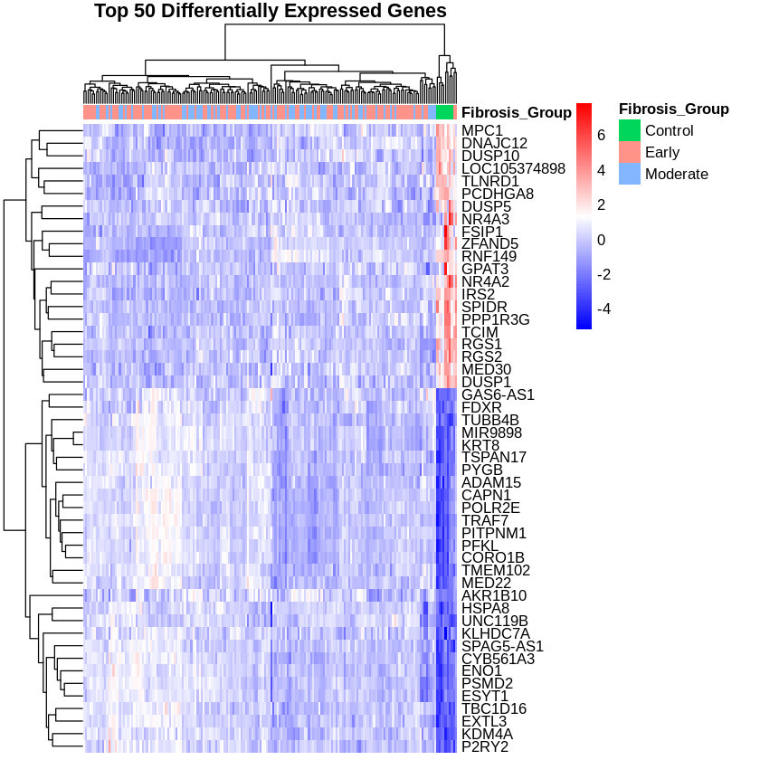
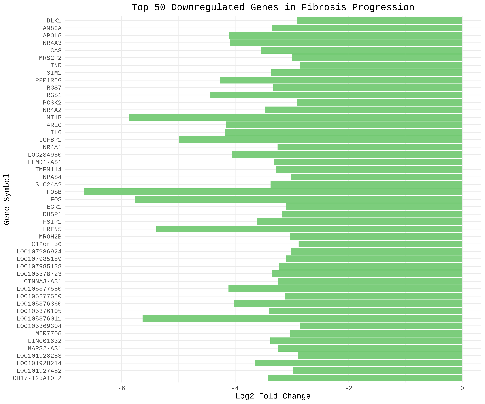
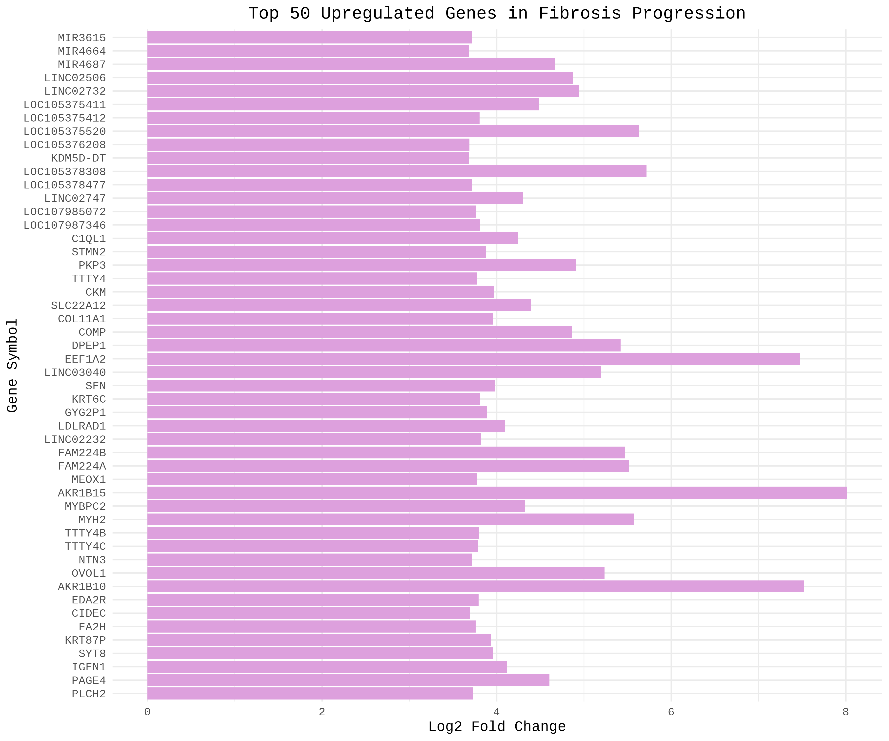

Results
Results were evaluated through multiple visualizations, including principal component analysis (PCA), volcano plots, and heatmaps, to identify patterns in gene expression across fibrosis stages. These figures were interpreted to assess differential expression trends and pathway-level changes, particularly in extracellular matrix (ECM) organization. Final outputs and interpretations were compiled and presented using Quarto for reproducible reporting.
 The PCA plot shows that PC1 accounts for 17.8% of the total variance and PC2 accounts for 8.4%, meaning that together they explain about 25% of the overall variation in gene expression across the samples. In this plot, proximity between samples indicates more similar gene expression profiles, while greater distance reflects larger differences. The clear separation between control and fibrotic samples along PC1 suggests that the transition from control to fibrosis represents the largest shift in gene expression. This major change is consistent with our hypothesis that genes related to extracellular matrix organization become increasingly expressed as fibrosis develops. In contrast, the early and moderate fibrosis groups cluster more closely together, indicating that their gene expression patterns are more similar. This suggests that once fibrosis is established, changes in gene expression occur more gradually. Overall, the PCA supports the idea that the most significant transcriptional changes happen during the initial onset of fibrosis, with more subtle progression afterward.
The PCA plot shows that PC1 accounts for 17.8% of the total variance and PC2 accounts for 8.4%, meaning that together they explain about 25% of the overall variation in gene expression across the samples. In this plot, proximity between samples indicates more similar gene expression profiles, while greater distance reflects larger differences. The clear separation between control and fibrotic samples along PC1 suggests that the transition from control to fibrosis represents the largest shift in gene expression. This major change is consistent with our hypothesis that genes related to extracellular matrix organization become increasingly expressed as fibrosis develops. In contrast, the early and moderate fibrosis groups cluster more closely together, indicating that their gene expression patterns are more similar. This suggests that once fibrosis is established, changes in gene expression occur more gradually. Overall, the PCA supports the idea that the most significant transcriptional changes happen during the initial onset of fibrosis, with more subtle progression afterward.
 The volcano plot displays differential gene expression, where the x-axis represents log2 fold change (direction of regulation) and the y-axis represents statistical significance. Genes shown in magenta are upregulated in advanced fibrosis, while blue genes are downregulated. The plot reveals that the top 10 most significant genes are all upregulated, indicating a strong bias toward increased gene expression in advanced fibrosis. Notably, genes such as LOXL4, FBLN5, and MMP7 are highly expressed and are known to play important roles in extracellular matrix organization, elastic fiber assembly, and tissue remodeling. The high position of these genes on the plot indicates that their upregulation is also statistically significant. This pattern suggests that extracellular matrix-related pathways are strongly activated in advanced fibrosis. Overall, the volcano plot supports our hypothesis by showing that genes involved in extracellular matrix organization are significantly upregulated as fibrosis progresses.
The volcano plot displays differential gene expression, where the x-axis represents log2 fold change (direction of regulation) and the y-axis represents statistical significance. Genes shown in magenta are upregulated in advanced fibrosis, while blue genes are downregulated. The plot reveals that the top 10 most significant genes are all upregulated, indicating a strong bias toward increased gene expression in advanced fibrosis. Notably, genes such as LOXL4, FBLN5, and MMP7 are highly expressed and are known to play important roles in extracellular matrix organization, elastic fiber assembly, and tissue remodeling. The high position of these genes on the plot indicates that their upregulation is also statistically significant. This pattern suggests that extracellular matrix-related pathways are strongly activated in advanced fibrosis. Overall, the volcano plot supports our hypothesis by showing that genes involved in extracellular matrix organization are significantly upregulated as fibrosis progresses.

The heat map visualizes gene expression patterns across samples, where red indicates high expression and blue indicates low expression. Clustering of samples reveals that early and moderate fibrosis groups have distinct gene expression profiles. Early fibrosis samples display more blue, suggesting lower expression levels of the selected genes. In contrast, moderate fibrosis samples show more red, indicating increased gene expression as the disease progresses. Notably, genes such as MMP7, FBLN5, and LOXL4 exhibit higher expression in moderate fibrosis and are known to be involved in extracellular matrix organization and fibrosis. This pattern highlights a shift toward increased activation of ECM-related pathways. Overall, the heat map supports our hypothesis by demonstrating that gene expression, particularly of ECM-related genes, increases with advancing fibrosis.
The bar graph represents the top 50 downregulated genes in early and moderate fibrosis. The x-axis represents a log2 fold change, and the y-axis has the list of all the genes. All the negative fold change values show a decrease of expression of the genes as fibrosis progresses. When comparing the downregulated to the upregulated genes, the range of the fold changes is narrower, indicating a more consistent downregulation across all the genes. The downregulated genes are mainly associated with metabolic processes, signalling pathways, and normal liver functions. The pattern of the genes supports the data stating that the liver cells lose their normal functions as fibrosis progresses. Overall, the downregulated genes decrease metabolic functions of the liver, increasing the structures of fibrosis progression as seen in the upregulated genes.
The bar graph shows the top 50 upregulated genes in the early and moderate fibrosis stages. The x-axis represents a log2 fold change, and the y-axis has the list of all the genes. There is an indication of increased fibrosis expression due to the positive changes in the log2 fold change values. Some genes show greater changes, suggesting a stronger upregulation of those specific functions. Many of these genes are associated with ECM organization, structural remodeling, and fibrosis progression. Most of the genes have similar fold changes, indicating a coordinated increase in fibrosis expression among the upregulated genes. Overall, this analysis supports the pattern of fibrosis progression via widespread activation of genes involved in remodeling and organization. The pathway dot plot displays the top 50 upregulated biological pathways, where color indicates statistical significance, with red showing more significant pathways and blue indicating less significant ones. Overall, the plot shows a relatively even distribution of gene involvement across multiple pathways, with a few pathways standing out more strongly than others. The most prominent and statistically significant pathway is epidermis development, indicating strong activation of genes involved in tissue growth, repair, and structural remodeling. Other enriched pathways, such as extracellular matrix organization, extracellular structure organization, and external encapsulating structure organization, further support the idea that tissue remodeling processes are highly active. Additionally, pathways related to muscle contraction and epithelial differentiation suggest broader changes in tissue function and structural integrity during fibrosis progression. The variation in circle sizes shows that some pathways involve more genes than others, but most remain consistently represented, suggesting coordinated biological activity rather than a single dominant process. Overall, this analysis indicates that upregulated genes in fibrosis are strongly associated with tissue development and extracellular matrix remodeling, supporting increased structural reorganization as fibrosis progresses.
The pathway dot plot displays the top 50 upregulated biological pathways, where color indicates statistical significance, with red showing more significant pathways and blue indicating less significant ones. Overall, the plot shows a relatively even distribution of gene involvement across multiple pathways, with a few pathways standing out more strongly than others. The most prominent and statistically significant pathway is epidermis development, indicating strong activation of genes involved in tissue growth, repair, and structural remodeling. Other enriched pathways, such as extracellular matrix organization, extracellular structure organization, and external encapsulating structure organization, further support the idea that tissue remodeling processes are highly active. Additionally, pathways related to muscle contraction and epithelial differentiation suggest broader changes in tissue function and structural integrity during fibrosis progression. The variation in circle sizes shows that some pathways involve more genes than others, but most remain consistently represented, suggesting coordinated biological activity rather than a single dominant process. Overall, this analysis indicates that upregulated genes in fibrosis are strongly associated with tissue development and extracellular matrix remodeling, supporting increased structural reorganization as fibrosis progresses.
 The downregulated pathway analysis indicates that several biological processes decrease in activity as fibrosis progresses in NAFLD. Notably, the most statistically significant pathways, shown in red, such as phototransduction and detection of light stimulus, suggest a reduction in sensory and signaling-related gene expression. Although these pathways are not traditionally central to liver function, their suppression may reflect broader disruptions in cellular communication and normal physiological activity within the liver. Additional pathways related to stimulus detection and digestion also show decreased expression, further supporting a decline in typical metabolic and signaling functions. This overall pattern suggests that as fibrosis advances, the liver shifts away from maintaining normal homeostatic processes. In contrast to these downregulated pathways, our hypothesis predicted that genes involved in extracellular matrix (ECM) organization would increase with fibrosis progression. Together, these findings support our hypothesis by showing that while normal liver functions are suppressed, resources may be redirected toward ECM remodeling and fibrotic tissue development.
The downregulated pathway analysis indicates that several biological processes decrease in activity as fibrosis progresses in NAFLD. Notably, the most statistically significant pathways, shown in red, such as phototransduction and detection of light stimulus, suggest a reduction in sensory and signaling-related gene expression. Although these pathways are not traditionally central to liver function, their suppression may reflect broader disruptions in cellular communication and normal physiological activity within the liver. Additional pathways related to stimulus detection and digestion also show decreased expression, further supporting a decline in typical metabolic and signaling functions. This overall pattern suggests that as fibrosis advances, the liver shifts away from maintaining normal homeostatic processes. In contrast to these downregulated pathways, our hypothesis predicted that genes involved in extracellular matrix (ECM) organization would increase with fibrosis progression. Together, these findings support our hypothesis by showing that while normal liver functions are suppressed, resources may be redirected toward ECM remodeling and fibrotic tissue development.